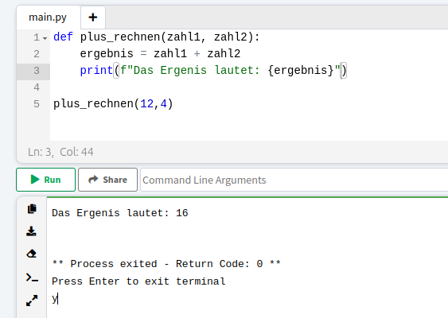

Was sind Funktionen?
In Python werden Funktionen benutzt, um häufig genutzte Programmstücke zusammen zu fassen, sie sind also eigentlich nur wieder “Mini-Programme”.
- Eine Funktion beginnt immer mit dem Signalwort def
- Dann kommt der Name der Funktion, um sie später wieder ansprechen zu können
- In die zwei runden Klammern direkt hinter dem Name kommen dann die Parameter, welche in der Funktion verarbeitet werden, die Input-Parameter
- Die erste Zeile wird beendet mit einem Doppelpunkt (:)
- Es folgen die Verarbeitungsschritte der Funktion. Dabei werden alle Befehle, welche zu der Funktion gehören mit 4 Leerzeichen eingerückt. Dabei ist Python sehr genau, dass es auch ja vier Leerzeichen sind.
- Zuletzt soll die Funktion das Ergebnis (den Output) “zurück”geben, dabei steht der gewünschte Output hinter dem Signalwort return
- Eine Funktion muss keinen Output zurückgeben. Sie kann auch ohne enden, oder wie es heute öfters der Fall sein wird, das Ergebnis mit einem print-Befehl ausgeben
Hier ist ein Beispiel einer Funktion, welche den Namen plus_rechnen hat und zwei Zahlen als Input nimmt: zahl1 und zahl2. Innerhalb der Funktion wird das Ergebnis der Addition der zwei Zahlen berechnet und anschließend mit einem Print-Befehl ausgegeben.
Beim Schreiben von Funktionen auf Online-Python gibt es einige hilfreiche Features, denn wenn du das Singalwort richtig schreibst, Klammern nicht vergisst und die erste Zeile mit einem Doppelpunkt beendest, werden die nächsten Zeilen automatisch korrekt eingerückt. Das erstpaar viel Zeit und Nerven, da du somit immer direkt weist, du hast das Anlegen der Funktion richtig gemacht. Das erkennst du auch daran, dass Signalwörter (def, print, return) immer in besonderen Farben erscheinen, ohne dass du das ausgewählt hast.
Programmiere eine Taschenrechner